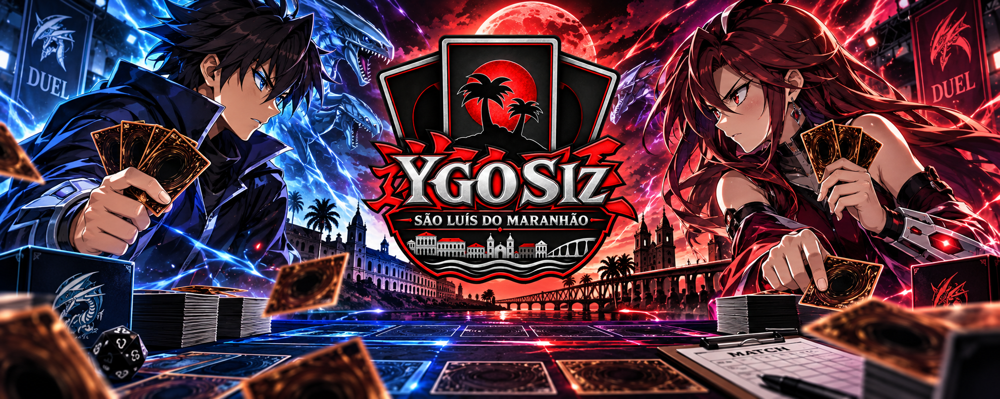

Próximos Torneios
OTS Championship
Data: 20/08/2026.
Horário: 16:00
Local: Nexus Card Game.
Formato: Tradicional.
Ver detalhesWeekly Tournament
Data: 27/08/2026
Horário: 15:00
Local: Guilda98
Formato: Tradicional
Ver detalhesEvento Championship
Data: 31/08/2026
Horário: 14:00
Local: Nexus Card Game
Formato: Tradicional
Ver detalhesÚltimas Notícias
OTS Championship movimenta a comunidade local
O OTS Championship realizado em São Luís reuniu jogadores da comunidade local em mais uma rodada competitiva de Yu-Gi-Oh!
Leia maisRanking de jogadores é atualizado
O ranking competitivo do YGO São Luís recebeu uma nova atualização com base nos resultados mais recentes dos torneios locais.
Leia maisTop Jogadores
| Posição | Jogador | Pontos | Vitórias | Derrotas |
|---|---|---|---|---|
| 1° | Yuri Rego | 76 | 18 | 6 |
| 2° | Renan Cuba | 67 | 16 | 8 |
| 3° | Kayo Ribeiro | 62 | 14 | 10 |
| 4° | Kleber Rossel | 55 | 11 | 13 |
Decks Mais Utilizados
Mitsurugi
Jogadores: 1
Percentual de uso: 25%
Ver DecklistBranded
Jogadores: 1
Percentual de uso: 25%
Ver DecklistElfnote
Jogadores: 1
Percentual de uso: 25%
Ver DecklistYummy
Jogadores: 1
Percentual de uso: 25%
Ver Decklist